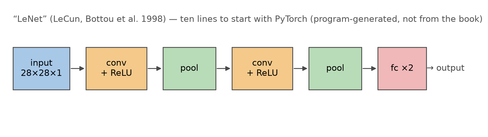
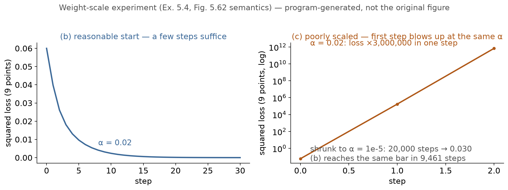
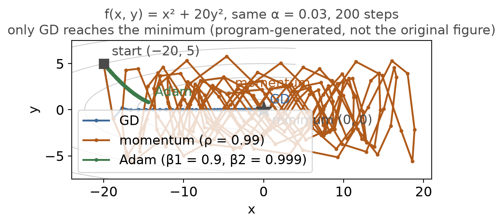

第 5 章 · 5.7 节习题
实验课：第 5 章的十九道题
上一集说，下一集是实验课。
书上第 337 页起排了十九道题。
范围从习题 5.1 到 5.19。
本集分四段：上机、数值、口算、清单。
依据：原书第 337–342 页
四段路线
上机三题：5.1 / 5.2 / 5.5
数值实验：5.4 七问
口算思辨：5.6–5.9
回响清单：5.10–5.19
正课第四十五集
01 / 9
习题 5.1 · 反向传播
第一题：亲手写完四步
前向激活、反向梯度、误差传播、权重更新。
损失量误差，链式法则把梯度传回输入层。
脚注给出课程作业和教学框架。
写一遍前向、反向、更新，看损失下降。
依据：原书第 337 页
四步
前向激活
反向梯度
误差传播
权重更新
正课第四十五集
02 / 9
习题 5.2 · LeNet
第二题：训练 LeNet
一九九八年勒昆的经典卷积网络。
数据集二选一：CIFAR-10 或 Fashion MNIST。
PyTorch 新手教程十行就能起手。
三道改造问：拆非线性、加容量、看准确率。
依据：原书第 337 页

LeNet 结构流程：输入→卷积→池化→全连接→输出｜程序生成，未用教材或论文原图
正课第四十五集
03 / 9
习题 5.3 / 5.4 · 权值尺度
阅读题之后：权值尺度七问
习题 5.3 推荐两本教材，有时间多刷。
习题 5.4 用两个隐藏单元拟合折线。
目标函数 y = |x1 + 1.1x2|。
三列权重：猜的、合理起点、糟糕起点。
依据：原书第 337–338 页
y = |x₁ + 1.1x₂|
ReLU 激活，不带偏置；习题 5.4 的目标函数，式 5.80
正课第四十五集
04 / 9
习题 5.4 · 问 1–3
两支 ReLU 拼出绝对值
ReLU(u) 加 ReLU(−u) 等于 |u|。
合理起点：正支权重全 1，负支全 −1。
输出层两个权重都是 1，两支相加。
九点网格逐点算激活、输出与损失。
依据：原书第 338 页；本集实验

权值尺度实验：合理起点数步收敛，糟糕起点一步爆｜程序生成，未用教材或论文原图
正课第四十五集
05 / 9
习题 5.4 · 问 4–7
步长、糟糕起点与批归一化
问四：沿梯度走多大一步，损失变多少。
糟糕起点：隐藏层 ±100，输出层 0.01。
同学习率第一步，损失抬到 173000。
问七：批归一化能不能救，原书不给答案。
依据：原书第 338–339 页；本集实验
实验读数
合理起点一步：0.0600→0.0399
糟糕起点一步：0.0600→173000
小学习率两万步：0.0600→0.0300
正课第四十五集
06 / 9
习题 5.5 · 函数优化
窄谷里的三种优化器
目标函数 f(x, y) = x² + 20y²。
起点 (−20, 5)，梯度 (−40, 200)。
三张药方：GD、momentum、Adam。
两百步内，三者没有公共学习率。
依据：原书第 339 页；本集实验

同一学习率 0.03 的三条轨迹：GD 收敛，momentum 卡住，Adam 慢爬｜程序生成，未用教材或论文原图
正课第四十五集
07 / 9
习题 5.6–5.8 · 口算与思辨
对称陷阱、卷积口算与等变性
权重全零，同层神经元永远一样。
256×256×3 的图配 64 个卷积核。
3×3 核：27 个权重，64 个共 1728。
卷积平移等变，平移不变不成立。
依据：原书第 339–340 页；本集实验
参数量
3×3：1728
5×5：4800
7×7：9408
9×9：15552
正课第四十五集
08 / 9
习题 5.9–5.19 · 回响清单
剩下的题，连回前面每一课
5.9 过拟合：损失、数据、架构三路防。
5.10–5.11 卷积与池化的等价和取舍。
5.14–5.16 U-Net、融合与 pix2pix 闪烁。
5.18 判别器太强，生成器学不动。
依据：原书第 340–342 页
交接
十九题：3 + 1 + 4 + 11
上机作业：画训练与测试曲线
下一章：第 6 章识别
正课第四十五集
09 / 9